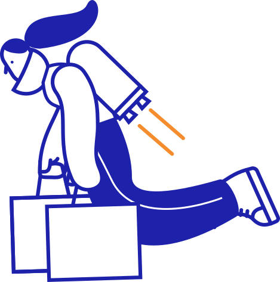
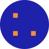
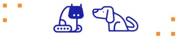
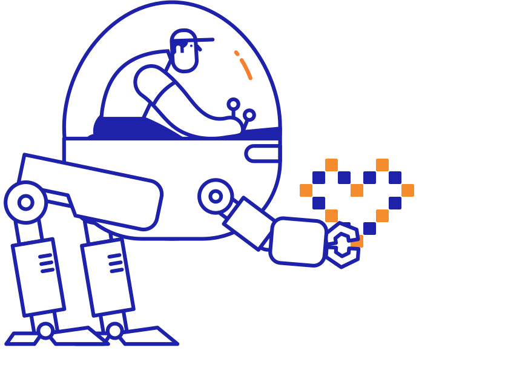

Note

Open-source efforts around scikit-learn at Inria are spinning off to a new enterprise, Probabl, in charge of sustainable development of a data-science commons.
Contents
Prelude: funding scikit-learn is hard
Scikit-learn is a central software component in today’s machine learning landscape, and it is open source, governed by a community, easy to install, and well documented. It started many years ago as a project that we did on the side, and we were joined by many volunteers, which was key to the success of the project. We soon decided to ensure that scikit-learn was not only a volunteer-based effort. Over more than a decade, I’ve dedicated a lot of energy to this, using a variety of funding mechanisms: first grants (as an academic), then sponsoring and related contracts with various actors.
Digital commons eliminate scarcity and exclusivity
Funding digital commons is really hard. People build fortunes by leveraging competitive advantages, by creating lock-ins, or selling access to data. What makes a great open-source library, as scikit-learn, is exactly what prevents these tricks: we are committed to being independent, easy to use and install, lightweight…
The birth of a new ambition
Scikit-learn is very successful, but it could be more. For instance, it does not facilitate pushing to production as much as tensorflow, which can be served, deployed to android… And scikit-learn is not very visible to top decision makers: it’s not a line on their budget, a brand that they know. As a consequence, it is not reaping the benefit of its success [1].
| [1] | Many commercial tools are sitting on top of open source software like scikit-learn (splunk, sagemaker, to name only a few), making profits, and not helping in any way the open source world that they build upon. |
The French government is backing us to push the envelope
3 years ago, the French government challenged us to go further, to consolidate the ecosystem into a consistent data-science commons. The strategic interest of France is to preserve some technological autonomy on data, eg sensitive data. Thus, the government offered us, at Inria, a funding opportunity to go further.
They promised us a lot of money (dozens of millions of Euros), but with a specific mission to develop a sustainable “data-science commons” [2] ecosystem around scikit-learn. I’ll spare you the details of the amount of meetings we had, documents that we wrote, to sketch the outline of the project. I pushed forward a vision of technical components that fit in the broader open-source ecosystem, complementing it.
| [2] | The letter that we received from the French government specifically defines the objective in these words: “data-science common” (“Communs numériques pour la Science des Données”) |
As I moved forward, I faced a difficulty: the French government wanted a sustainability plan, and private investment to back it. To be honest, this is not what I’m good at. François Goupil, the COO of the scikit-learn consortium, was helping me, but we needed more for our ambitions. And this is when we started talking to Yann Lechelle, a tech entrepreneur with an impressive track record interested in the impact of France on the global tech world.
Probabl, a mission-driven enterprise
With Yann, we built a new vision. Our challenge is to be long-term sustainable and virtuous for scikit-learn, its broader ecosystem, and its community. Yann brought in a business point of view, and I tried to bring that of open-source communities beyond probabl [3], for instance avoiding to getting in the way of others building businesses that contribute to scikit-learn. Indeed, we are convinced that having a broad and diverse community around scikit-learn is central to its future.
| [3] | One of the first things that Probabl did (Guillaume Lemaître, to be specific), was submit a grant application (to the Chang-Zuckenberg Institute), to fund, via NumFocus, a developer employed by Quantsight, with no money transiting via Probabl (one reason being that we have no operations outside of Europe so far). |
Our sustainability model is still being finetuned. What I can tell is that it will involve a mix of professional service, support & sponsorship agreement, as well as a product-based offer, where we supplement scikit-learn with enterprise features. Our focus will be on features that are typically not the focus of open-source developers: integration in large structures, such as access control, LDAP connection, regulatory compliance. We will not shoehorn scikit-learn in open core or dual licensing approaches: we want our incentives to be aligned with scikit-learn, and its ecosystem, being as complete as possible.
Foster growth and adoption of our open-source stack
In a sense, our inspiration is that of RedHat, where the growth of the company fosters the growth and adoption of the software (Linux in the case of RedHat), beyond the company, in an ecosystem, and for a wide variety of applications.
Strong growth will mean external capital. To ensure that we do not lose the focus on our mission, building data-science commons, Yann penciled down a specific governance of the company (and then validated it with many people, as we are a spin-off from a governmental organization). The ultimate share structure, and the board, are divided in three electoral colleges: one for outside investors, one for founders and employees, and one for public institutions. This ensures a balance of power that hopefully will keep us aligned to our mission. I think that this structure sends a strong signal that we are not just another for-profit that will go from creating useful tech to dark money-generating patterns.
Probabl is already having an impact
A strong open-source team In February, the whole team developing scikit-learn at Inria moved to Probabl, joined by Adrin Jalali, a Berlin-based core developer of scikit-learn and fairlearn. We’ve been hiring excellent people, and we now have 9 people on open-source (see the Probabl team), spending their time contributing to open source (Jérémie, for instance, has been doing the last releases for scikit-learn).
Fostering an ecosystem Probabl is not only about scikit-learn. We are prioritizing 8 libraries, central to the machine-learning and data science ecosystem: joblib, fairlearn, imbalanced-learn… In general, as we have always done, we will not hesitate contributing to upstream or related projects. Our goal is to have a healthy open-source ecosystem around data-science.
Not only software Not everybody sees the important lines of code. I’ve become increasingly aware of the need to do outreach and communication, to coders, but also to decision makers. At Probabl we dedicate energy to be in business meetings, to participate in the tech narrative, to teach how to best do data science, eg with didactic videos. We’re starting a mentioning program, we’ll be organizing sprints… I am convinced that all this is a useful long-term investment.
My position within Probabl, my vested interests
I am a French civil servant (a researcher at Inria, one of our national research institute). Such a position comes with strong responsibilities to control conflicts of interest. The creation of Probabl underwent strict scrutiny (that took a long long time). I have been recently cleared to take an active role: 10% of my time is allocated to be a scientific and open-source advisor for Probabl.
I am not paid by Probabl. 100% of my salary comes from Inria (and I was not given a raise because of my involvement in Probabl). I do have financial interests as a founder, but given that I have a small active part, I have one of the smallest amount of shares among founders.
My main interest in Probabl is really the success of its mission: the long-term growth of an open-source data-science ecosystem. Spinning-off from Inria actually continues my efforts in this direction, but with more agility and breadth. And having on top of open source a variety of complementary commercial activities makes it stronger, by answering better the needs of some actors.
More to come
There are many things that we are still ironing. Clearing out specific details takes time (for instance, clearing my role took a while). We are still to announce the future of the sponsorship program that we had set up at the Inria foundation. Its mission has been transferred to Probabl. Currently, Probabl’s open source team is ensuring continuity of our work with the existing sponsors. But we will set up broader partnership opportunities, with a similar governance, that enable third-parties to invest in open source on a roadmap decided jointly with the open-source community.
I believe that we need a lot of transparency in how we decide upon priorities in our open source team. Our 2024 priorities for scikit-learn are visible here.
I look forward to when Probabl will start adding value to scikit-learn for enterprises with an offer enriching scikit-learn and the broader open-source ecosystem.
I am acutely aware that good open source is made of communities, and that communities need trust and understanding of big players such as Probabl (well, so far we are not that big). I hope that with time our actions will become easy to read and speak of themselves.
